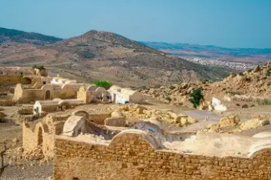
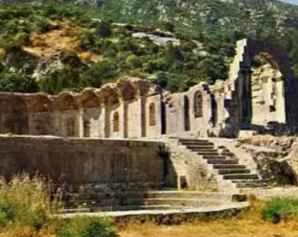
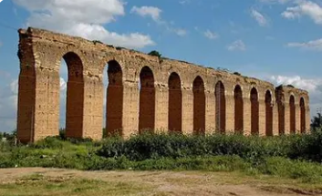
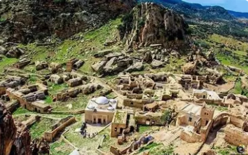

Le Château d'Eau de la Tunisie

Zaghouan est un gouvernorat situé au nord-est de la Tunisie, dominé par le majestueux djebel Zaghouan culminant à 1 295 mètres. C'est une région montagneuse réputée pour ses sources d'eau et sa nature verdoyante.
La ville de Zaghouan, chef-lieu du gouvernorat, est nichée au pied de la montagne et connue pour son temple des eaux romain. Elle a joué un rôle vital dans l'approvisionnement en eau de Carthage durant l'Antiquité.
Le gouvernorat se distingue par ses ressources hydriques exceptionnelles, son patrimoine romain remarquable avec l'aqueduc de Carthage, ses paysages montagneux et sa production d'eau minérale naturelle.
Principale source d'eau potable de la Tunisie, abritant les sources du djebel Zaghouan qui alimentent Tunis et plusieurs régions. Production d'eau minérale renommée.
L'aqueduc de Carthage, chef-d'œuvre d'ingénierie romaine long de 132 km, acheminait l'eau de Zaghouan à Carthage. Nombreux vestiges encore visibles aujourd'hui.
Montagne sacrée culminant à 1 295 m, offrant des randonnées spectaculaires, une flore riche et des vues panoramiques sur les plaines environnantes.
Région verte avec forêts de pins, sources naturelles, cascades et une biodiversité exceptionnelle. Destination prisée pour l'écotourisme et les randonnées.

Monument romain du IIe siècle construit par l'empereur Hadrien, sanctuaire dédié aux sources du djebel Zaghouan. Architecture en forme de nymphée avec douze niches abritant les sources sacrées.

Prouesse technique romaine du IIe siècle, long de 132 km, transportant 32 millions de litres d'eau par jour. Les arcades de Mohammedia et d'Oudna sont particulièrement bien conservées.

Ancien village berbère accroché à flanc de montagne à 400 m d'altitude, avec ses maisons troglodytes creusées dans la roche. Architecture traditionnelle unique et vue panoramique exceptionnelle.